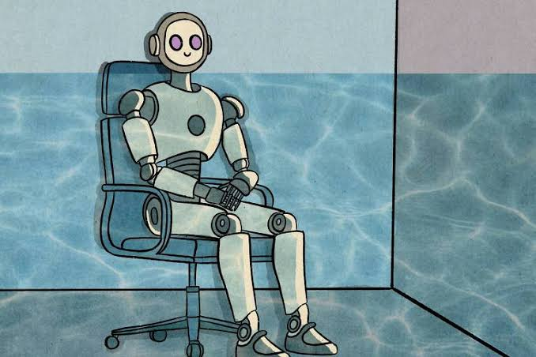

Este é um exemplo de uma página definida com o português do Brasil
Segundo parágrafo da página
Salve o Tricolor Paulista,
Amado clube brasileiro!
Tu és forte, tu és grande,
Dentre os grandes és o primeiro!
- maçã
- pão
- ovos
- leite
- item marcador padrao (disc)
- item marcador de círculo vazio (circle)
- item com marcador de quadrado cheio
Passo a passo para ligar um computador:
- Verificar o cabo de alimentação na tomada
- Certificar-se de que o cabo de alimentação está conectado no computador
- Pressionar o botão de ligar
- Aguardar até que a tela de inicialização apareça
- item 5
- iitem 6
- item 7

| Theo | 16 anos | São Paulo |
| robo | 1000 anos | Marte |
| jao | 18 anos | Rio de janeiro |